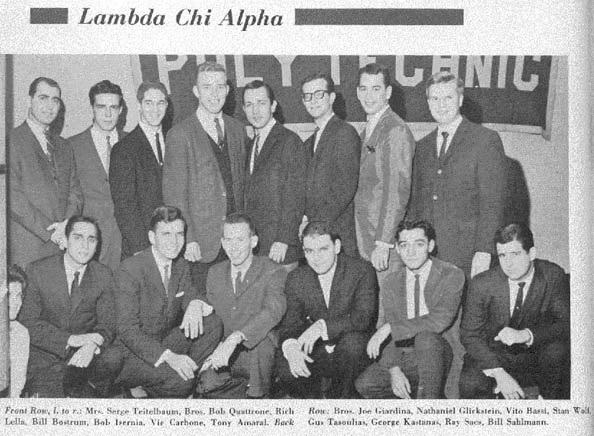
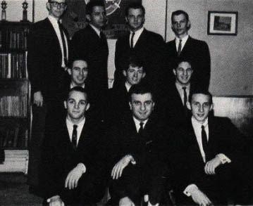

The Golden Years - The Late 50's Through The 60's
Much of the day-to-day activities of the chapter during this period are shown in photos elsewhere on this web site, so that aspect
of chapter life won't be repeated in this section.
It was a good time for fraternities. There were five fraternities on campus during this period:
- Lambda Chi Alpha--the only fraternity from this era that has remained alive and active at Poly
- Pi Kappa Phi--across the street at 33 Sidney Place, always friendly rivals; the chapter went out of existence in the very late '90s
- Alpha Phi Delta--a small chapter with links to other chapter in New York City; they had a loft on Myrtle Avenue
- Phi Sigma Delta--occupied a loft on Lawrence Street
- Alpha Epsilon Pi--occupied a loft on Jay Street, on the other side of Myrtle Avenue from Poly
Here are two senior class photos from the era--1963 and 1964.
Notice the smiles--it was a generally untroubled time, and the guys were happy to be done with Poly and set to go
out and find a job in a prospering economy.
Two significant activities from this era are the formation of an alumni chapter and the revitalization of
the house corporation.
The 1963 Class Photo

The 1964 class photo

The formation of an Alumni Chapter
February 1964 Los En Croissant
This issue of the alumni newsletter points out that there has been increased
activity in support of an Alumni Chapter of Theta Upsilon Zeta of Lambda Chi
Alpha from the alumni. The newsletter points out the numerous benefits of an
alumni chapter, the most important being a closer association between alumni
and graduates. It was asked that people fill out the questionnaire and send
it in expressing their views on an alumni chapter.
October 1965 Los En Croissant
On the front cover of the newsletter there was a letter from the newly appointed
High Rho, Joe Durbano, stating that he felt that his role as an officer was
to act as a liaison between the active chapter and the alumni organization.
Joe went further to call for an formation of an alumni chapter, feeling that
alumni affairs could be handled more effectively by alumni themselves rather
than undergraduates in order to benefit the alumni program. Roger Grice (class
of 64’) who had already begun to lay the groundwork for an alumni chapter
was enlisted to help.
Spring 1967 TH – U News
The Alumni Chapter of Theta Upsilon Zeta has been formed! The idea was conceived
at Founders’ Day 1966 to make for a social alumni chapter. The membership
at the time had at least one representative from each class, starting with the
class of 56’. At the time, the membership was up to 30 men with hopes of
getting many more. The officers at the time were: Senior High Alpha, Joe Giardina
’62, Senior High Beta, Vincent Celeste ’60; Senior High Gamma, Don
Hayes ’65; Senior High Tau, Charlie Gomes ’56; Senior High Rho, Roger
Grice ’64; Senior High Epsilon, Bob Schwab ’61.
The chapter meets 4 times a year. The first Saturday after Labor Day and the
first Saturday of the months of December, February, and May.
First Quarter 1968 Los En Croissant
What is the Alumni Chapter? Theta Upsilon’s Alumni Chapter is the point
of emphasis for the continuation of the fraternal spirit that was part of brothers’
lives when they were in college. After little more than a year it could be clearly
seen that the Theta Upsilon Alumni Chapter could become the same kind of force
that had been established in several other Zeta’s.
The two basic considerations are the maintenance of the fraternal ties and the
continuing interest of the Zeta. In the alumni chapter brothers regard their
association with Lambda Chi Alpha as being life long.
In the first year devotion was put largely towards organizing and planning.
By-Laws and class list were prepared and regular chapter alumni meetings were
held. The events in the social program were well attended. The leadership of
Senior High Epsilon Bob Schwab ’61 was largely responsible for the success
of the social program.
Future plans included the formation of an alumni advisory board, a house corporation,
and an alumni directory.
First Quarter 1970 Los En Croissant
Since it had been a while since the last meeting if the alumni chapter, there
was much to be discussed at the next meeting on February 28th to sustain the
alumni chapter and build it as the vital force that it could be. The biggest
item on the agenda was the election of officers. After several years of being
promised the first draft of the alumni chapter officer installations would make
their appearance.
|